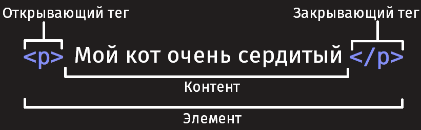
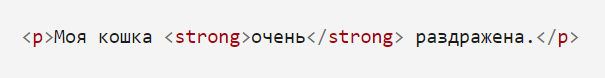
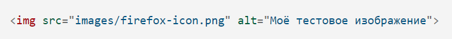
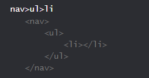
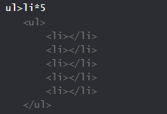

HTML (Hypertext Markup Language) - это код, который используется для структурирования и отображения веб-страницы и её контента. Например, контент может быть структурирован внутри множества параграфов, маркированных списков или с использованием изображений и таблиц данных. Как видно из названия, эта статья даст вам базовое понимание HTML и его функций.
Что такое HTML на самом деле?
HTML не является языком программирования; это язык разметки, и используется, чтобы сообщать вашему браузеру, как отображать веб-страницы, которые вы посещаете. Он может быть сложным или простым, в зависимости от того, как хочет веб-дизайнер. HTML состоит из ряда элементов, которые вы используете, чтобы вкладывать или оборачивать различные части контента, чтобы заставить контент отображаться или действовать определённым образом. Ограждающие теги могут сделать слово или изображение ссылкой на что-то ещё, могут сделать слова курсивом, сделать шрифт больше или меньше и так далее. Например, возьмём следующую строку контента:
Анатомия HTML элемента
Давайте рассмотрим элемент абзаца более подробно.
Главными частями нашего элемента являются:
- Открывающий тег (Opening tag): Состоит из имени элемента (в данном случае, "p"), заключённого в открывающие и закрывающие угловые скобки. Открывающий тег указывает, где элемент начинается или начинает действовать, в данном случае — где начинается абзац.
- Закрывающий тег (Closing tag):Это то же самое, что и открывающий тег, за исключением того, что он включает в себя косую черту перед именем элемента. Закрывающий элемент указывает, где элемент заканчивается, в данном случае — где заканчивается абзац. Отсутствие закрывающего тега является одной из наиболее распространённых ошибок начинающих и может приводить к странным результатам.
- Контент (Content)Это контент элемента, который в данном случае является просто текстом.
- Элемент(Element)Открывающий тег, закрывающий тег и контент вместе составляют элемент.
Элементы также могут иметь атрибуты, которые выглядят так:

Атрибуты содержат дополнительную информацию об элементе, которую вы не хотите показывать в фактическом контенте. В данном случае, class это имя атрибута, а editor-note это значение атрибута. Класс позволяет дать элементу идентификационное имя, которое может позже использоваться, чтобы обращаться к элементу с информацией о стиле и прочих вещах.
Атрибут всегда должен иметь:
- Пробел между ним и именем элемента (или предыдущим атрибутом, если элемент уже имеет один или несколько атрибутов).
- Имя атрибута, за которым следует знак равенства.
- Значение атрибута, заключённое с двух сторон в кавычки.
Вложенные элементы
Вы также можете располагать элементы внутри других элементов — это называется вложением. Если мы хотим заявить, что наша кошка очень раздражена, мы можем заключить слово "очень" в элемент strong, который указывает, что слово должно быть сильно акцентированно:
Вы, однако, должны убедиться, что ваши элементы правильно вложены: в примере выше мы открыли первым элемент p , затем элемент strong, потом мы должны закрыть сначала элемент strong, затем p.
Элементы должны открываться и закрываться правильно, поэтому они явно располагаются внутри или снаружи друг друга. Если они перекрываются, как в примере выше, ваш веб-браузер будет пытаться сделать наилучшее предположение на основе того, что вы пытались сказать, что может привести к неожиданным результатам. Так что не стоит этого делать!
Пустые элементы
Некоторые элементы не имеют контента, и называются пустыми элементами. Возьмём элемент img, который уже имеется в нашем HTML:
Он содержит два атрибута, но не имеет закрывающего тега /img, и никакого внутреннего контента. Это потому, что элемент изображения не оборачивает контент для влияния на него. Его целью является вставка изображения в HTML страницу в нужном месте.
Ссылки
Ссылки очень важны — это то, что делает Интернет Интернетом. Чтобы добавить ссылку, нам нужно использовать простой элемент — a — a это сокращение от "anchor" ("якорь"). Чтобы текст в вашем абзаце стал ссылкой, выполните следующие действия:
7 ОСНОВНЫХ ТЕГОВ, КОТОРЫЕ ВЫДЕЛЯЮТ SEO-ПРОФИ ОТ НОВИЧКОВ
Попадание в ТОП-1 – это заветная мечта многих сайтов. К сожалению, в интернете работают миллионы хороших и полезных web-ресурсов, которые так и не нашли своих пользователей.
МЕТА-ТЕГ TITLE
Тег Title является самым важным при определении поисковой позиции. При определении релевантности какой-либо страницы поисковик должен определить, какого рода контент содержится на ней и на всём сайте.
В теге Title следует написать тему каждой страницы сайта. Причём сделать это нужно так, чтобы поисковые системы могли с лёгкостью и недвусмысленно её понять.
В этом теге обязательно должны находиться ключевые слова. Они сообщат поисковым системам тему страницы. В нашем примере ключевое выражение «инструменты бесплатного продвижения сайтов». Это легко увидеть по похожим словам в теге Title и описании (представлено ниже). Данный приём необычайно важен для поискового продвижения.
Некоторые системы управлением сайтами (так называемые «движки»), могут проставлять автоматически либо в них есть специальное окно для копирования Title. Так работает WordPress. И всё же лучше в конце посмотреть код страницы и убедиться, что в мета-тег Title попало то, что нужно. Это принципиально важно. Тег Title играет ключевую роль при поисковом продвижении. Его правильное составление – это ключ к успеху и искусство одновременно. Техника «Эверест» поможет выжать 100% возможностей из этого тега. Познакомиться с ней можно из представленного ниже видео
остальную информацию касательно 6ти оставшихся тегов важных для SEO продвижения вы найдете на сайте первоисточнике по ссылке.
Emmet Синтакс
Emmet uses syntax similar to CSS selectors for describing elements positions inside generated tree and elements attributes.
Syntax
Child: >
Multiplication: *
